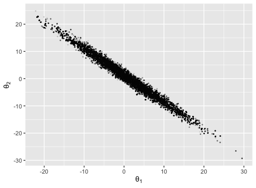
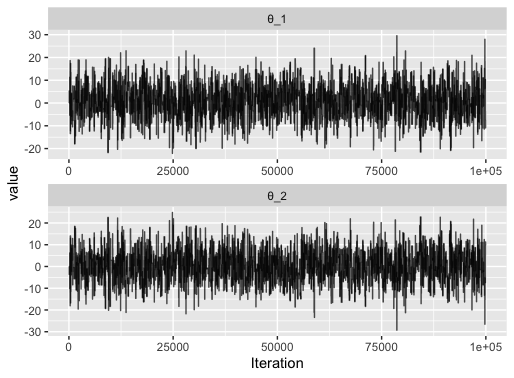

1.1 Example
1.1.1 Model
We are going to use the ilike package to run MCMC to approximate the posterior distribution of a two-dimensional parameter \(\theta = (\theta_1,\theta_2)\), where \(\theta_1 + \theta_2\) gives the mean of a normal distribution with standard deviation 1.
The model used is:
\[ \theta \sim \mathcal{MVN}(\mathbf{0}_2,100 \mathbf{I}_2), \] \[ y \sim \mathcal{N}(\theta_1 + \theta_2,1), \] where \(\mathbf{0}_2\) is the 2-dimensional column vector of zeros and \(\mathbf{I}_2\) is the 2-dimensional identity matrix. We fit this model to 100 observations of \(y\) drawn from a standard normal distribution.
1.1.2 ilike file
The code below gives an example of a valid ilike file.
/***data,y=get_data()***/
/***evaluate_log_prior***/
double prior_eval(const Parameters ¶meters)
{
arma::colvec θ = parameters["θ"];
return dnorm(θ[0],0.0,10.0) + dnorm(θ[1],0.0,10.0);
}
/***evaluate_log_likelihood***/
double llhd(const Parameters ¶meters,
const Data &data)
{
arma::colvec θ = parameters["θ"];
double y = data["y"];
return sum(dnorm(y,θ[0]+θ[1],1.0));
}
/***m_proposal,ilike::mvnorm_rw(θ,p1)***/
/***mcmc_termination,ilike::iterations(100000)***/Let’s not get too hung up on all of the details yet - let’s instead focus on the structure of the file. It contains 5 functions, each containing a header line enclosed by /*** and ***/. The format is a little different between the functions, since three different approaches are used to specify them. I’ll give a brief overview after we see the code.
A brief description of each function now follows. A full description will be given in later sections.
/***data,y=get_data()***/. This header specifies the data. The data itself is not shown in the file, since this responsibility is delegated to an R functionget_data(), which is found in a different file. Theget_data()function returns a matrix of 100 points drawn from a standard Gaussian, as follows:
/***evaluate_log_prior***/. The function underneath this header evaluates the log of a prior distribution, given by the product of two normal distributions. This is written in C++, using the classParameters, which behaves like an R list (or python dictionary). A C++ function calleddnormis provided by the package in order to make writing the C++ functions a little easier. Important note: all ilike distributions are specified in \(\log\) form, so herednormbehaves like the R function of the same name, but the argumentlog=TRUEis implicitly set./***evaluate_log_likelihood***/. Again, the function underneath this header is specified using C++, this time specifying the likelihood. Vectors and matrices in ilike are stored using armadillo./***m_proposal,ilike::mvnorm_rw(θ,p1)***/. This header specifies the proposal to use in a Metropolis algorithm. The use ofilike::is used to denote the use of a native ilike function, in this casemvnorm_rwwhich specifies a multivariate Gaussian random walk proposal. The first parameterθgives the name of the parameter to be moved using this proposal, the secondp1will be read in as an argument, giving the proposal covariance when the MCMC algorithm is called./***mcmc_termination,ilike::iterations(100000)***/. This uses the ilike functioniterationsto specify that the MCMC will be terminated after 100000 iterations.
To use this model it must first be compiled. To do this we call
where toy_model_rwm.ilike is the file containing the code we described above.
1.1.3 Running MCMC
We run the Metropolis algorithm on this model/data by calling:
mcmc(model,
results_name = "toy_model_rwm",
initial_values = list(list(θ=c(0,0))),
model_parameter_list = list(300.0*diag(2)))The first argument is the model we compiled in the previous step. results_name, specifies the folder where the results will be written. initial_values gives the initial values of the chain. model_parameter_list gives the value of p1, the proposal covariance.
No output is provided to the R console on running an MCMC algorithm - it can be found in the folder results_name, which is created in the current working directory. The following section gives an example of loading the output into R, and plotting it.
1.1.4 Visualising the output
The ilike package contains functions for loading the output from ilike algorithms into R, in a format amenable to summarising or plotting. For this simple example, we can plot the output as a scatter plot using the ggsmc package.
output = load_mcmc_output("toy_model_rwm",ilike.output = TRUE)
library(ggsmc)
plot_scatter(output,x_parameter = "θ",x_dimension=1,y_parameter="θ",y_dimension=2,use_initial_points = FALSE)
We can plot trace plots using ggmcmc
